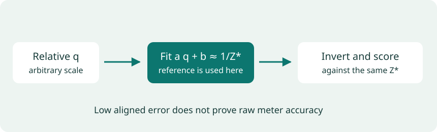

Lesson 4 of 7 · 4 min
Putting the predictions to a test
Point-pair ordering and sensor-reference errors
Page narration: listen, read, or record
Page audio is pending.
Before reading the results, try the question about fitting a prediction to sensor depth. The distinction matters because the reference helps us choose the scale and shift. A low error after that fit tells us about shape agreement; it doesn't mean the model knew those distances on its own. I used two checks: annotated near and far pairs, and six NYU sensor-depth examples. The code and table below show how they were scored. This is a small comparison, so I wouldn't use it to declare one model best everywhere. You can also download a saved case and check the calculation yourself.
Download scriptRecord your own narration
Use the script above as a guide. Press Record to enable the microphone. Audio stays on your device.
Press Record when ready.
Download before leaving this page. Add the clip to the narration folder to publish it. Recording guide
V2 and AC each get 34 of 35 clean point pairs right. The sensor-depth examples ask a different question: how closely does the whole predicted shape match a reference?
A relative prediction has low error after fitting scale and shift to the sensor reference. What has been demonstrated?
Shape agreement after alignment. The reference supplied the fitted scale and shift. The score does not show that the unaligned model can recover those meter distances by itself.
Two kinds of reference
NYU Depth V2 provides indoor RGB images and Kinect depth [11]. The filled maps show scene depth; raw projected measurements identify the sensor-supported pixels used in our scoring mask.
Other datasets change both the scene and the measurement process. KITTI uses driving imagery and LiDAR-derived depth [12]; Hypersim supplies rendered indoor scenes and geometry [13]. I reviewed these datasets but did not run experiments on them.
DA-2K provides photographs with annotated near/far point pairs [1]. Each annotation tells us which point is closer, without supplying a dense map of distances.
The comparison setup
I fixed the selection and transformations before running the models:
- 15 DA-2K photographs: the first three lexicographically sorted annotated images in each of five categories; 35 pairs in total.
- Four inputs per photograph: original, mild dimming, strong dimming, and Gaussian blur. Dimming uses round(255 × 0.25 × (RGB/255)1.6) or round(255 × 0.05 × (RGB/255)3); blur radius is min(height,width)/80.
- Six NYU scenes: zero-based labeled-file indices 0, 289, 578, 867, 1156, and 1448.
- Inference: float32, one image at a time, with a 518-pixel short-edge target rounded for each model's patch grid. V2 and AC share native preprocessing; DA3 uses its own processor.
Dimming and blur preserve the annotation coordinates. Digital dimming approximates a loss of visibility; a real low-light camera would also introduce noise and exposure effects.
Scoring near/far pairs
I read the inverse-depth values at the original annotation coordinates. The larger value is the model's choice for the closer point. Ties count as incorrect; every condition includes all 35 pairs.
Fitting relative depth to NYU
To compare the relative output q with a reference Z* in meters, I fit a q + b ≈ 1/Z* per image and invert the fitted values.

For example, q = [1, 2, 3] matches inverse reference depths [0.5, 0.75, 1] with a = 0.25 and b = 0.25. Finding that fit required the reference values.
The fit uses the same pixels as the score. This oracle alignment measures shape agreement after access to the reference; a low error does not establish that the model predicts meters on a new photograph.
The mask requires finite raw sensor and filled depths between 0.1 and 10 meters, within rows 45:471 and columns 41:601 (end-exclusive Python slices). The fit must have positive scale. Aligned inverse values are clipped to [0.1,10] before inversion, and the clipped fraction is recorded.
# Fit relative inverse depth q to inverse reference depth.
mask = valid_sensor_mask & crop & (gt > 0.1) & (gt < 10)
x = q[mask].astype("float64")
target = 1.0 / gt[mask]
A = np.column_stack([x, np.ones_like(x)])
a, b = np.linalg.lstsq(A, target, rcond=None)[0]
if a <= 0:
raise ValueError("Reversed ordering")
aligned = 1.0 / np.clip(a * q + b, 0.1, 10.0)
abs_rel = np.mean(np.abs(aligned[mask] - gt[mask]) / gt[mask])Reading the results
AbsRel averages absolute error divided by reference depth. RMSE takes the square root of mean squared meter error, weighting large errors more heavily. Lower is better for both. δ₁ is the fraction of pixels where max(prediction/reference, reference/prediction) < 1.25; higher is better. Each of the six NYU images contributes equally to mean AbsRel.
| Model | Original | Mild dim | Strong dim | Blur | Aligned AbsRel ↓ | Median seconds |
|---|---|---|---|---|---|---|
| Depth Anything V2 Small | 34/35 | 33/35 | 32/35 | 32/35 | 0.03729 | 0.1226 |
| DepthAnything-AC Small | 34/35 | 33/35 | 34/35 | 33/35 | 0.03710 | 0.1698 |
| Depth Anything 3 Small | 33/35 | 28/35 | 25/35 | 24/35 | 0.06644 | 0.4118 |
AC keeps two more pairs correct than V2 under strong dimming and one more under blur. Their clean counts match, and their mean aligned NYU AbsRel differs by about 0.00020. DA3 has lower counts under the perturbations, yet gets the clean mirror pair right where V2 and AC fail.
Timing is the median of five warmed, synchronized runs on the first NYU image, using Apple M4 Metal/MPS. It includes preprocessing, inference, upsampling, and CPU transfer; loading and plotting are excluded.
How far the evidence goes
This is a fixed sample of 15 photographs and six indoor records, not a full benchmark or a verified official test split. Pairs within a photograph and transformed copies of it are correlated: 180 predictions are still based on 15 original scenes. Training-data overlap has not been checked.
V2 and DA3 differ in architecture and training, so their scores cannot identify the effect of either alone. The comparison describes these checkpoints on these inputs.
The explorer's rank stability is Spearman correlation with the original prediction, using up to 30,000 sampled pixels. A high value means the ordering changed little. A model can retain the same wrong ordering, so stability needs the pair score alongside it.
The NYU download contains a saved V2 kitchen prediction, reference, mask, and scoring code. It recomputes the displayed error without loading a model.
Run a new photograph
Install uv and Git, then run the commands below. This local exercise takes additional setup time beyond the tutorial.
git clone https://github.com/LinnKhantCho2002/cs663-monocular-depth-tutorial.git
cd cs663-monocular-depth-tutorial/reproduce
uv sync --locked
uv run python scripts/prepare.py --only model
uv run python scripts/run_experiments.py --image ../media/da2k_transparent_reflective_01_clean.jpg --out outputs/my_photoReplace the image path with your own photograph, quoting paths that contain spaces. The supplied wine-glass photo is a resized display copy. The first run fetches the pinned V2 Small Hugging Face weights; later runs reuse them. Device selection prefers CUDA, then Apple MPS, then CPU. Add --device cpu to choose CPU explicitly.
Open outputs/my_photo/comparison.png. The folder also contains the raw inverse_depth.npy, color and grayscale maps, oriented RGB image, and result.json with the model revision, input tensor shape, device, and inference time. Each processed RGB pixel has one relative inverse-depth value, in arbitrary units.
Follow engine.py through image preparation, the forward pass, and bicubic interpolation back to the RGB grid. Custom photos are limited to a 1,600-pixel longest side. This example uses the Hugging Face port; the three-model table uses native implementations with different preprocessing.
Rerun the native comparison
uv run python scripts/prepare.py --only samples
uv run python scripts/prepare.py --only nyu
uv run python scripts/prepare_models.py
uv run python scripts/compare_models.pyThese commands fetch the pinned source, checkpoints, and original records, then write outputs/comparison/summary.json. The dataset loader requires HTTP range access. Downloads need network access and storage; hardware and floating-point differences can affect near ties and timing. The reproduction guide covers outputs, troubleshooting, and licenses. Check revisions against the original run's provenance.